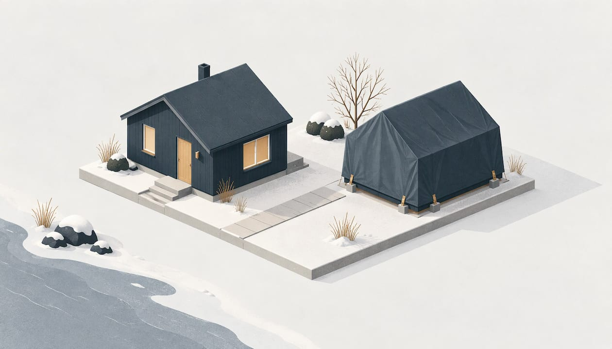
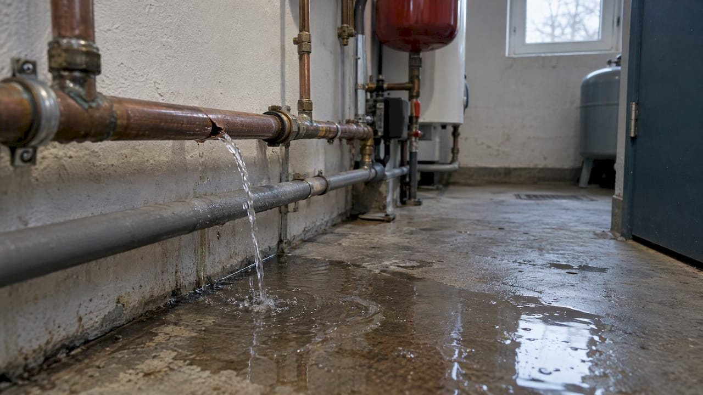

Luk sommerhuset ned for vinteren: tjekliste til delte huse
Sådan lukker I sommerhuset ned for vinteren: vand, varme, fugt og udendørs tjek, plus hvordan familier fordeler opgaverne, så intet bliver glemt.
Opdateret 24. november 2026

Når du lukker sommerhuset ned for vinteren, gælder det først og fremmest om at holde frosten ude af vandrørene. Luk for vandet og tøm installationerne, eller hold huset varmt nok hele vinteren. Gør derefter huset klar til fugt, storm og mus. Det tekniske er overkommeligt. I et sommerhus, som flere familier deler, er det sværeste at vide, hvem der lukker huset sidst, hvem der har lukket stophanen, og hvem der kører derud, når frosten kommer. Det er her, de fleste glemte haner og overraskende regninger opstår. Hyttio er en gratis iPhone-app til netop de familier: én fælles kalender, én husbog, opgaver med ansvarlige og ét regnskab. Nedenfor får I hele nedlukningen trin for trin, og hvordan I fordeler den, så den faktisk bliver gjort.
Kort sagt
- Vælg én strategi: et tømt og uopvarmet hus, eller et hus, der holdes frostfrit med vand i rørene. En halv løsning er den dyreste.
- Luk for vandet ved jordstophanen eller i målerbrønden, åbn alle haner, tøm cisterner, vandvarmer og maskiner, og hæld frostvæske i vandlåsene.
- Lad ventiler, indvendige døre og skabslåger stå åbne, sluk og tøm køleskab og fryser, og fjern mad og frostfølsomme ting.
- Tjek tag, tagrender, udendørs haner og løse havemøbler, og luk huller, hvor mus kan komme ind.
- Aftal skriftligt, hvem der lukker sidst, hvem der tilser huset ved frost, og hvordan udgifterne deles. Det er her, et delt hus oftest glipper.
Indholdsfortegnelse
- Hvornår skal sommerhuset lukkes ned?
- Tømt eller opvarmet: vælg én strategi
- Sådan lukker I for vandet og tømmer rørene
- Varme, fugt og ventilation
- Indendørs: før I låser døren
- Udendørs: storm, tøvand og mus
- Når I er flere om huset: hvem gør hvad?
- Saml nedlukningen ét sted med Hyttio
- Tilsyn i løbet af vinteren og åbning til foråret
- Ofte stillede spørgsmål
- Kilder
Hvornår skal sommerhuset lukkes ned?
De fleste lukker ned i oktober eller november, når sæsonen er slut. Reglerne for sommerhuse spiller også ind: Aarhus Kommune forklarer, at man som udgangspunkt ikke må overnatte i sommerhuset i længere tid ad gangen i vinterperioden fra 1. november. Weekender og kortere ferier er fint, men huset står typisk tomt i lange perioder fra november til slutningen af februar. Og det er netop i de uger, frosten rammer.
Vandværkerne siger det ret klart: luk for vandet, hver gang huset står tomt i længere tid. Vejby Vandforsyning anbefaler endda, at stophanen altid står lukket, når huset forlades, også i korte perioder. Tryg-rådgivningen hos Finansforbundet peger på perioden fra oktober til april som den tid, hvor man bør lukke for vandet ved måler eller stophane, hver gang man tager hjem.
For en familie, der deler huset, betyder det, at nedlukningen ikke er én begivenhed, men to:
- Den store nedlukning sidst på sæsonen, hvor huset gøres vinterklart.
- Den lille nedlukning efter hvert vinterophold, hvor den, der var der sidst, lukker vandet og efterlader huset, som I har aftalt.
Begge dele kræver, at alle ved, hvem der er den sidste i huset. Det er nemmere at se i en fælles kalender end at regne sig frem til i en familiechat.
Tømt eller opvarmet: vælg én strategi
Der er to forsvarlige måder at komme gennem vinteren på, og I skal vælge den ene.
| Tømt og uopvarmet hus | Opvarmet hus med vand i rørene | |
|---|---|---|
| Passer til | Huset bruges ikke fra november til marts | I kommer jævnligt i weekender og ferier |
| Vand | Lukket og tømt, frostvæske i vandlåse | Lukket ved hovedhanen, når I tager hjem |
| Varme | Kan slukkes | Bolius anbefaler mindst 10 til 12 °C |
| Tilsyn | Efter storm og ved længere perioder | Ved frostvarsel og strømsvigt |
| Største risiko | Rester af vand i rør og maskiner | Varmen svigter, og ingen opdager det |
Bolius anbefaler mindst 10 til 12 °C, hvis huset skal holdes frostfrit med vand i rørene, og at huset tilses løbende, fordi kulde og strømsvigt kan ændre forholdene. Hvor meget varme der skal til, afhænger af husets isolering. Bruger I kun en luft-til-luft-varmepumpe, skal varmen kunne nå ud i alle rum med rør, og Tryg gør opmærksom på, at varmepumpens frostindstilling ikke nødvendigvis frostsikrer skjulte vandinstallationer.
Forsikringen er det stærkeste argument for at tage valget alvorligt. Ifølge Bolius’ guide om frostsprængninger dækker forsikringen som regel kun frostsprængninger i sommerhuse, hvis huset har været tilstrækkeligt opvarmet. Læs jeres egen police, og skriv betingelserne ind, hvor alle i familien kan finde dem.
Sådan lukker I for vandet og tømmer rørene
Det her er den vigtigste del af nedlukningen, og den, der oftest bliver gjort halvt. Rækkefølgen herunder bygger på vejledninger fra danske vandværker. Tjek altid jeres eget vandværks side, for stophanens placering varierer fra hus til hus.
- Find den rigtige hane. Sydvand anbefaler at lukke med jordstophanen mellem skel og målerbrønd med en T-nøgle, fordi serviceventilerne ved vandmåleren ikke er garanteret at lukke helt tæt. I nogle huse sidder hovedhanen i stedet i målerbrønden som en kuglehane. Hvor den sidder i jeres hus, og hvor T-nøglen ligger, hører hjemme i husbogen.
- Luk forsigtigt. Fausing Vandværk advarer om, at et hårdhændet vrid kan beskadige hanerne, så de begynder at åbne igen. Drej roligt til stop.
- Tøm trykket ud af systemet. Åbn hanen efter måleren, aftapningshanen og alle husets vandhaner, indtil der ikke kommer mere vand. Kontrollér, at vandmåleren står stille. Står den ikke stille, er der ikke lukket helt.
- Tøm toiletcisterner og hæld frostvæske i vandlåse. Vig Lyng Vandværk nævner cisterner, frostvæske i vandlåsen og tømning af vandvarmer samt opvaskemaskine og vaskemaskine som en del af frostsikringen.
- Sluk og tøm vandvarmeren. Sluk for strømmen først, så varmelegemet ikke kører tørt.
- Tøm udendørs haner og fjern slangekoblinger. En kobling, der sidder på, kan holde vand tilbage i hanen.
- Aflæs vandmåleren. Thy Forsyning anbefaler at aflæse måleren ved vinterlukning. Tag et foto og gem tallet, så I til foråret kan se, om der er løbet vand.
Bolius bemærker, at trykluft kan fjerne det meste af det resterende vand, men ikke nødvendigvis alt. Er I i tvivl om, hvordan jeres anlæg tømmes helt, anbefaler Sydvand at få en VVS-installatør til at gøre det. Det er en god investering det første år, især hvis I får installatøren til at vise jer, hvordan det gøres, så den, der lukker ned, kan gentage det.
Hvorfor så omhyggeligt? Vig Lyng Vandværk forklarer, at vand under tryk fryser, udvider sig og sprænger røret, mens isproppen holder vandet tilbage. Skaden viser sig derfor først, når isen smelter, og så kan vandet løbe i dagevis, før nogen kommer forbi.

Varme, fugt og ventilation
Et lukket sommerhus skal stadig kunne ånde. Fugt fra en kold vinter giver kondens, skimmel og den velkendte indelukkede lugt til foråret.
- Lad friskluftventilerne stå åbne. SparEnergi anbefaler, at ventilerne står åbne, når sommerhuset forlades, og nævner kondens, skimmel og dårlig lugt som tegn på fugtproblemer.
- Åbn indvendige døre og skabslåger, så luften kan cirkulere, også i køkkenskabe og garderober mod ydervægge.
- Hold øje med luftfugtigheden. Bolius angiver 40 til 45 % relativ luftfugtighed som et godt niveau om vinteren. Et billigt hygrometer viser tallet ved hvert besøg.
- Overvej solvarme til ventilation. SparEnergi beskriver en luftsolfanger, der blæser solopvarmet luft ind og derfor kan ventilere om vinteren uden at køle huset.
Holder I huset opvarmet, så sørg for, at varmen når ud i alle rum med vand- og afløbsrør, også bryggers, badeværelse og eventuelle anneks.
Indendørs: før I låser døren
Gå huset igennem rum for rum. En fast liste gør det nemt for den, der ikke plejer at lukke ned:
- Fjern alle madvarer, også dåser og flasker, der kan fryse og sprænge.
- Sluk køleskab og fryser, tør dem af og lad lågerne stå åbne.
- Sluk elektriske apparater og tag stikket ud.
- Tag frostfølsomme ting med hjem: rengøringsmidler, maling, medicin og drikkevarer.
- Tøm skraldespande og tag affaldet med.
- Luk og lås vinduer, men lad ventilerne stå åbne.
- Tjek, at sengetøj og dyner ligger tørt og ikke op ad en kold ydervæg.
Udendørs: storm, tøvand og mus
Vinterens skader kommer ikke kun indefra. Bolius anbefaler at gennemgå tag, facader, døre, vinduer og fundament, at rense tagrender og nedløb, og at kontrollere åbninger, hvor mus og rotter kan komme ind.
- Tag og tagrender: Fjern blade og grene, så tøvand kan løbe væk i stedet for at trænge ind under tagpap eller tagsten.
- Træer: Se efter svage eller døde grene, der kan falde ned på taget i en storm.
- Havemøbler, trampolin og redskaber: Sæt dem ind i skuret eller bind dem fast.
- Skur og anneks: Lås dem, og tjek, at der ikke står vand eller væske, der kan fryse.
- Sokkel og ydervægge: Luk revner og huller med det samme. En mus kan komme ind gennem meget små åbninger.
Noter det, I ser, med billeder. Det, der ikke bliver ordnet i dag, skal være en opgave med en ansvarlig, ellers står det der også til foråret.
Når I er flere om huset: hvem gør hvad?
I et hus med én ejer er nedlukningen én persons ansvar. I et hus, der deles af søskende, svigerfamilie eller vennepar, er det alles ansvar, og det betyder i praksis ofte ingens. Advokat Mie Rahbek Thomsen anbefaler i en tjekliste om sameje, at man aftaler brug, vedligeholdelse, rengøring og vedligeholdelsesbidrag skriftligt, fordi uenigheder er svære at løse uden en nedskrevet aftale. Nedlukningen er en af de aftaler, der betaler sig mest.
Sådan fordeler I den, uden at noget falder mellem to stole:
- Se, hvem der er sidst i huset. Den sidste booking i kalenderen før vinterpausen er den naturlige ansvarlige for den store nedlukning. I Hyttio ligger alle bookinger i én fælles kalender med notifikationer, og bookingerne kan vises i Google Kalender og Outlook, så det ikke er til diskussion, hvem der lukker.
- Gør nedlukningen til opgaver, ikke en huskeseddel. Del listen op: vand og rør, varme og ventilation, indendørs, udendørs. Giv hver del en ansvarlig og en deadline. I Hyttio har opgaver netop en ansvarlig og en deadline, så alle kan se, hvad der er gjort, og hvad der mangler.
- Skriv vejledningen ned ét sted. Hvor sidder jordstophanen, hvor ligger T-nøglen, hvilken hane er aftapningshanen, og hvordan tømmes vandvarmeren? Den viden sidder typisk i hovedet på én person. Hyttios husbog samler de praktiske oplysninger om huset, så svigersønnen kan lukke ned lige så sikkert som den, der har gjort det i 20 år.
- Aftal vintertilsyn. Hvem kører derud ved frostvarsel, efter en storm eller ved strømsvigt? Lav en turnus og læg den ind som opgaver hen over vinteren.
- Del udgifterne med det samme. Frostvæske, VVS-installatør, varme til et opvarmet hus og eventuel reparation af tagrenden skal deles efter jeres aftale. I Hyttio registrerer I udgiften med kvittering, og appen fordeler regningerne og holder balancen mellem jer automatisk.
Har I ikke allerede en fælles aftale om huset, er 10 ting at aftale, når I deler sommerhus et godt sted at starte, og nedlukningen kan skrives direkte ind i jeres husregler til sommerhuset. Vil I regne fordelingen af vinterens udgifter igennem først, kan I bruge vores beregner til fælles udgifter.
Saml nedlukningen ét sted med Hyttio
En tjekliste på køleskabet hjælper kun den, der står foran køleskabet. Hyttio samler bookingkalender, opgaver, husbog, indkøbsliste og regnskab i én iPhone-app, så hele familien ser den samme plan for vinteren: hvem der lukker sidst, hvad der er gjort, hvor stophanen sidder, og hvem der skylder hvem for VVS-regningen.
Appen er gratis og uden reklamer, og jeres data gemmes i jeres egen iCloud og deles kun med dem, I inviterer. Hent Hyttio, og læg årets nedlukning ind som jeres første fælles opgaveliste. Til hverdagsbesøgene resten af året kan I bruge vores tjekliste til ankomst og afrejse.
Tilsyn i løbet af vinteren og åbning til foråret
Et lukket hus er ikke et glemt hus. Tryg-rådgivningen anbefaler, at huset tilses ved frostvarsel fra DMI, og et opvarmet hus skal tilses jævnligt, fordi et strømsvigt kan slukke varmen uden varsel. Er I flere familier, så skift tilsynet mellem jer, og notér hvert besøg, så næste person kan se, hvornår der sidst var nogen.
Ved hvert tilsyn:
- Tjek, at varmen kører, hvis huset holdes opvarmet.
- Se efter vand på gulve, fugtpletter og lugt af skimmel.
- Aflæs hygrometeret.
- Gå en runde udenfor efter storm: tag, tagrender og træer.
Når I åbner huset til foråret, åbner I for vandet langsomt og lukker de haner, I lod stå åbne. Thy Forsyning anbefaler at lade vandet løbe et par minutter, og Sydvand forklarer, at vandet kan være uklart eller grumset efter en længere afbrydelse, indtil frisk vand kommer frem. Sammenlign vandmålerens tal med billedet fra efteråret. Er der løbet vand, er der en utæthed, der skal findes, før den bliver til en vandskade.
Ofte stillede spørgsmål
Hvornår skal vi lukke for vandet i sommerhuset?
Luk for vandet, hver gang huset står tomt i længere tid, og om vinteren hver gang I tager hjem. Flere vandværker anbefaler at lade stophanen stå lukket, også efter korte ophold. Den store nedlukning med tømning af rør og cisterner laves typisk i oktober eller november, når sæsonen er slut.
Hvor varmt skal et sommerhus være om vinteren?
Hvis der er vand i rørene, anbefaler Bolius mindst 10 til 12 °C. Behovet afhænger af husets isolering, og varmen skal nå ud i alle rum med vand- og afløbsrør. Tjek også betingelserne i jeres forsikring, fordi frostsprængninger i et utilstrækkeligt opvarmet hus som regel ikke dækkes.
Må vi bruge sommerhuset i vinterferien?
Ja, korte ophold som weekender og ferier er tilladt i vinterperioden fra 1. november til slutningen af februar. Det er længere sammenhængende ophold, der som udgangspunkt ikke er tilladt. Husk at lukke ned igen, når I tager hjem, efter den samme liste som i efteråret.
Hvem har ansvaret, når vi er flere om huset?
Det bestemmer I selv, men skriv det ned. Den mest holdbare aftale er, at den sidste booking før vinterpausen står for nedlukningen, og at vintertilsynet går på skift. Med opgaver, der har en ansvarlig og en deadline, er der ingen tvivl om, hvem der skulle have lukket stophanen.
Kilder
- Aarhus Kommune: Hvor meget må jeg bo i mit sommerhus?
- Vejby Vandforsyning: Lukkevejledninger
- Finansforbundet: Gør dit fritidshus vinterklar
- Bolius: Sådan lukker du sommerhuset ned for vinteren
- Bolius: Hold husets rør varme og undgå frostsprængninger
- Tryg: Vinterklart fritidshus
- Sydvand: Periode- og vinterlukning
- Fausing Vandværk: Tomme huse
- Vig Lyng Vandværk: Frostsikring
- Thy Forsyning: Gode råd om vand i dit sommerhus
- SparEnergi: Spar energi i dit sommerhus
Læs også
- Tjekliste til sommerhuset: ankomst og afrejse
- Dele sommerhus med familien: 10 ting at aftale
- Husregler til sommerhuset – gratis skabelon
Flere guider
Tjeklisten i lommen
Opgaver, der husker sig selv
I Hyttio får hver opgave en ansvarlig og en deadline, og det, der skal gøres hvert år, dukker op af sig selv.
Hent Hyttio i App StoreGratis til iPhone. Uden reklamer og uden konto.
Ingen glemmer at lukke for vandet
Fælles opgaver og husbog i Hyttio – gratis for hele familien.
Hent gratis i App Store